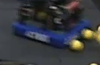
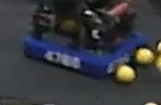
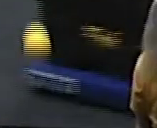
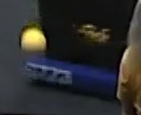

Real crops from the 2026 Curie stream, enlarged. Each broadcast frame is two half-frames captured 1/60 s apart, so anything moving gets "combed".
As it comes off the stream
After our de-interlace


A blue robot turning: the whole robot and its bumper are striped, and the digits only come back after de-interlacing.


Another blue bumper: the digits go from horizontal stripes to something a reader can work with.